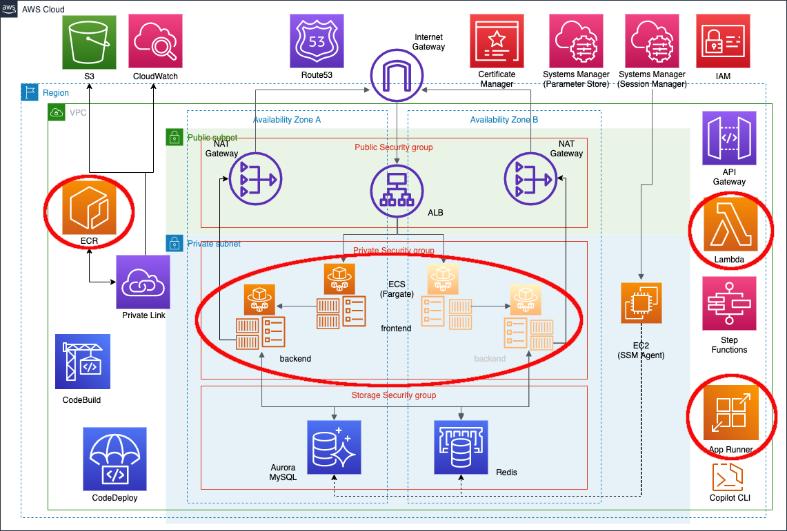
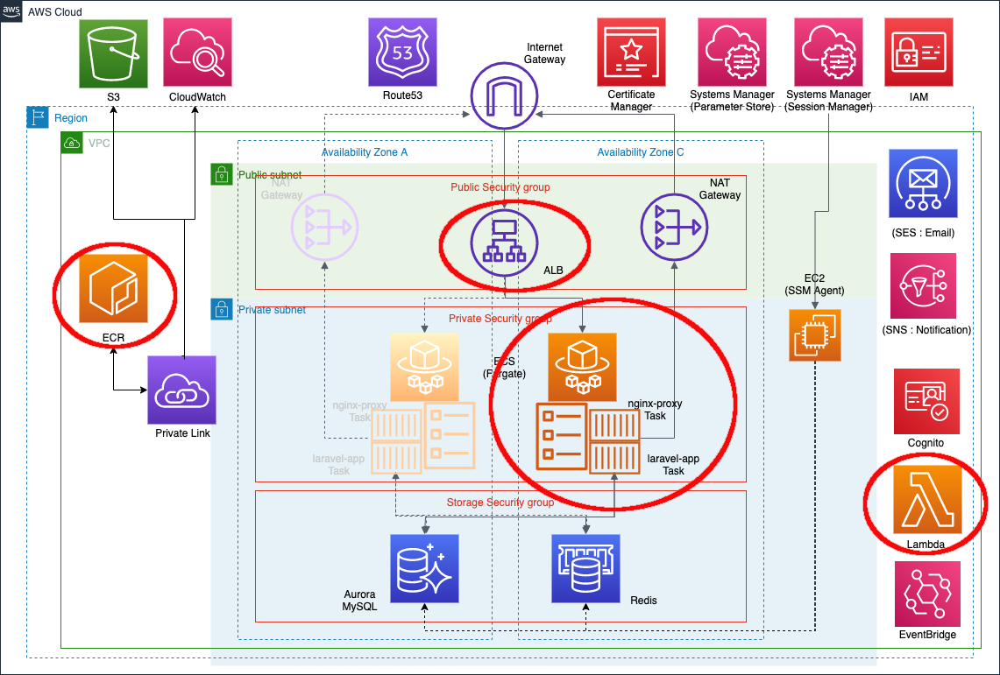

PHPプロダクトの
Deployをラクにする
CLIツールたち
2021/10/03
About Me
Hisashi SOGA (freelance: ant-in-giant)
Backend Engineer [AWS:5 CI/CD:3 Laravel:2]

- PHPerKaigi2021
- (1) Laravelプロダクト Fargate化への道
- PHP Conference Japan 2020
- (2) 本番でしか起きない問題に早く気が付けるように、僕は Laravel Dusk で CI する
- July Tech Festa 2020
- (3) 間隙を縫って現場と自分を Extend していく流浪人スタイル
AGENDA
- はじめに
- 主役級のツール
- 脇役級のツール
- 一点特化なツール
- おわりに
- 資料は公開してあります ->
- ※1. 履歴が増殖するため、シークレットウィンドウでご覧ください（Chromeを推奨）
- ※2. ところどころのオレンジの文字はリンクになっています
- ※3. スペースで次のページに進みます（[o]でOverviewが見れます）)
- ( SpeakerDeck版 はダウンロードしたPDFではリンクに飛べるはずなのでご利用ください)
- はじめに
- 主役級のツール
- 脇役級のツール
- 一点特化なツール
- おわりに
話の前提・範囲
- Terraform で構築
- AWS Fargate (on Amazon ECS) 上で稼働
- CircleCI / Bitbucket Pipelines での自動/手動運用
- 最近、CodeBuild に一部移行
- Blue/Green Deployment 対応あり
(「Laravelプロダクト Fargate化への道」@ PHPerKaigi2021 (2021/3/28) の続き)
某2021年3月リリース案件
某2019年11月リリース案件
- はじめに
- 主役級のツール
- 脇役級のツール
- 一点特化なツール
- おわりに
ecspresso
deployment tool for Amazon ECS, pronounced same as “espresso”.
- ECSサービス定義・タスク定義の作成・更新
- シンプルなコマンド＋小複数パラメータ＆設定
- 終了を待つ/待たないを選択可能
- テンプレート記法・tfstate読込・CFn連携便利
- jsonnetでDRYにBlue/Green Deploymentを定義
- ECS Exec に対応（v1.5〜）
- CodeDeploy x FARGATE_SPOTに対応 (v1.6〜)
copilot-cli
toolkit for containerized applications on AWS
- ゼロから App Runner をデプロイできる
- Dockerfile の準備は必要
- こちらもシンプルなコマンド体系＆設定
- パラメータ定義は然程がんばらなくてよい
- CloudFormation ベース
- 未対応な点がいくつかある
- v1.11 で StartCommand に対応？
- はじめに
- 主役級のツール
- 脇役級のツール
- 一点特化なツール
- おわりに
jsonnet
- テンプレートから JSON ファイルを生成できる
- import 式とその継承 (*1)
- "似ているが微妙に異なる"設定の管理に強力に役立つ
- ECSタスク定義を簡素化(共通部分外部化) (*2)
- ex) jsonnet task-base.libsonnet > ecs-task-def.json
- ECSタスク定義を簡素化(共通部分外部化) (*2)
- 使い過ぎに注意
direnv
can load environment variables depending on the current directory
- カレントディレクトリ限定で環境変数展開
- AWS_PROFILE・AWS_DEFAULT_REGION など
- {{ must_env “HOGE” }} で HOGE を置換
- bash で記述（工夫もできる）
- CI/CDで利用するときは↓ (*2)
direnv allow . && eval "$(direnv export bash)"
- .envrc はリポジトリで管理すべきでない
- はじめに
- 主役級のツール
- 脇役級のツール
- 一点特化なツール
- おわりに
ecschedule・lambroll
a tool to manage ECS Scheduled Tasks / a minimal deployment tool for AWS Lambda
- inspired by ecspresso / 同様のコマンド体系
- 手動 / terraform (module) で生成
- dump / init で設定を採取
- apply / deploy で更新
- （lambroll）invoke で実行
utern
Multi group and stream log tailing for AWS CloudWatch Logs
- ロググループをまたいで tail できる (*1)
- awscli 経由なので事前に要 configure
- 5分前以降のログが見たい場合 -s 5m と指定
- ラクに、というよりは確実に Deploy に臨む用
- はじめに
- 主役級のツール
- 脇役級のツール
- 一点特化なツール
- おわりに
おわりに
- Deployはプロダクトの価値を届ける最大事。ラクに誰でもできる状態にすることで開発に注力もできる。
- それを実現させる、設定＋少複数パラメータのコマンドがいろいろあって素晴らしい時代。大いに使っていこう。
End
お気づきの点あれば
@sogaoh まで
PHPプロダクトのDeployをラクにするCLIツールたち
2021/10/03
@sogaoh
LT @ https://phpcon.php.gr.jp/2021/